Maria Katsaris
June 9th 1953 - Nov 18th 1978
The Deadly Devotion of Maria Katsaris
(REICH) 09/05/24 - Maria Katsaris was born on June 9th, 1953 in Pittsburgh Pennsylvania to Steven Anthony Katsaris and Sophia M Papadeas Katsaris.
The Katsaris family later moved to California. Maria attended Carlmont High School in Belmont California prior to the family's move to Ukiah California.
Maria had a brother named Anthony Katsaris. She had a sister who was born before her and who died in infancy with her name - Maria. She had a sister named Elaine Constance Katsaris.
In August 1972, the Katsaris family was first introduced to a religious group in Ukiah California called the Peoples Temple headed by Reverend Jim Jones. Steven Katsaris was the guest speaker at a late night meeting convened just for him. In attendance was his 19 year old daughter, Maria Katsaris. After Steven Katsaris finished his guest speaking, the family left the building while the tape continued to roll with Jones continuing to address his congregation. Jones denounced the Greek Orthodox Church and further denounced Steven Katsaris. He then expressed his interest in winning over Maria Katsaris. Steven's daughter, Maria Katsaris, joined the Peoples Temple. She traveled with the group to Guyana South America where she would later play a major role in Jones' organization, especially in the final year of its existence.
Maria's father, Steven Katsaris, appealed to the media and to politicians who represented his district in California to bring his daughter home whom he felt was being held against her will by Jim Jones in Jonestown Guyana. On April 17th 1978, in a radio transmission from Jonestown to address concerned relatives in America, Maria Katsaris made strong accusations against her father. She vowed she would never leave Jonestown and return to the US.
On November 18th 1978, in Jonestown Guyana South America, Jim Jones led 909 members of The Peoples Temple in the largest mass suicide in history. Congressman Leo Ryan; photographer Greg Robinson of The San Francisco Examiner; NBC cameraman Bob Brown; NBC reporter Don Harris; and Temple defector Patricia Parks - were shot to death by Jim Jones' loyal death squad on the Port Kaituma airstrip. Sharon Amos and her grown daughter Liane Harris along with Sharon's young children, Christa Amos and Martin Amos, all died at the Peoples Temple house in Lamaha Gardens in Georgetown. Anthony Katsaris was badly wounded on the airstrip.
Prior to the mass suicide, Anthony Katsaris traveled to Jonestown with Congressman Leo Ryan to persuade his sister, Maria Katsaris, to return with him to California. In a photo of Maria and Anthony on the morning of the suicides in Jonestown, likely taken by San Francisco Examiner photographer, Greg Robinson, who was killed by Jones' death squad at the Port Kaituma airstrip, Anthony looks thankful and happy to just be standing next to his sister. His face speaks volumes of his adoration and love for a sister, it seems, he'd love to hold and never let go. Maria, on the other hand, has a far away look on her face of utter obstination. Aside from taking photos of the siblings, NBC News conducted a short interview with Maria and Anthony in Jonestown in November 1978.
Maria Katsaris was one of Jim Jones' closest assistants. She held one of the top leadership positions in the organisation. In news articles, she is disrespectfully referred to as one of Jim Jones' mistresses. Some believe Katsaris was the last to die in Jonestown - shooting Jim Jones before killing herself; however, there is no definite evidence of just who killed Jones.
In the middle of the mass suicide, Maria handed off a suitcase filled with cash to Mike Prokes, Tim Carter and his brother Mike Carter. The three men were armed with handguns and were instructed by Katsaris to deliver the cash to the Russian Embassy in Georgetown. In a 1978 interview with the Carter brothers, while still in Guyana, Mike Carter said that authorities reported to the press that there was half a million dollars in the suitcase. In that same interview, Tim Carter said they had no idea how much money was in the suitcase because they weren't informed of the amount and certainly didn't count it. In subsequent interviews, many years later, Tim Carter said the amount of money in the suitcase was a million and a half dollars. In the 1978 interview in Guyana, Tim Carter and Mike Carter said that the men had transferred the cash into a bag and left it in a chicken house. They both reported that they ran for their lives from Jonestown. They said they were picked up by Guyanese authorities hours later and taken to police headquarters where they were placed under protective custody for a time but not under arrest. The fate of the cash was never disclosed.
Maria Katsaris died on the night of November 18th 1978, in Jim Jones' cabin, by self-administered cyanide poisoning. She was 25 years old.
Maria's body was returned to the United States from Jonestown Guyana to Dover Air Force Base, Delaware. An autopsy was performed on December 15th, 1978. The autopsy stated that Maria was dressed in a green checked shirt, tan trousers with a brass belt buckle, white socks, and blue sneakers, and wearing gold colored earrings. In attendance at her autopsy were: Robert L. Thompson (Captain, MC, USM), Kenneth H. Mueller (LtCol, USAF, MC), Joseph M. Ballo (LTC, MC, USA), Douglas S. Dixon (Major, MC, USA), and Rudiger Breitenecker (MD).
Maria Katsaris was laid to rest at Potter Valley Cemetery in Potter Valley, Mendocino County, California.
To visit Maria's gravesite in Potter Valley California: from Hwy 101, take Hwy 20 towards Lake County. Drive 4 miles to the Potter Valley turnoff. Turn left onto Lake Pillsbury Drive. Go 2.4 miles to West Road. Turn left and go 2 miles to the cemetery. The parking area is on the far side of the cemetery under a huge tree.
In 2000, a cenotaph honouring the memory of Maria Katsaris was placed beside her sister, Elaine Constance Katsaris Launer in Skylawn Memorial Park cemetery in San Mateo, California.
Maria was loved, especially by her family. Her father Steven Katsaris appealed to the media and to politicians that his daughter was not in a good place and needed to be returned to her loving family. Her brother, Anthony Katsaris, surely took a bullet for his sister. He traveled thousands of miles to bring her home. Maria was a daughter, a sister, and a dear friend to many. Her life is not remembered for the sole event that took place in Jonestown Guyana on November 18th, 1978 by those who loved her. Dearest Maria, we love you, we miss you, and we honour you for always.
"Nobody joins a cult. Nobody joins something they think's going to hurt them. You join a religious organisation. You join a political movement. And you join with people that you really like."
Deborah Layton Blakey - Past Member
The Life & Death of Peoples Temple
Copyright 2024 All Rights Reserved
April 17th 1978


 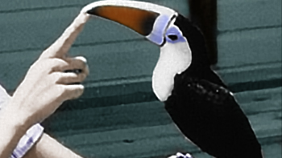
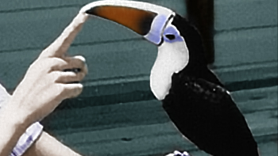

 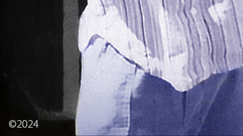
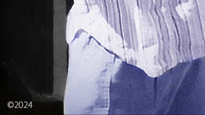

November 1978
November 18th 1978

 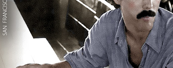
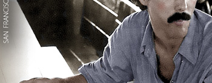
 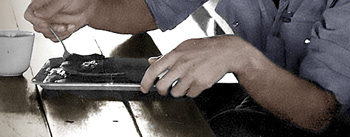
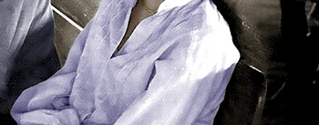
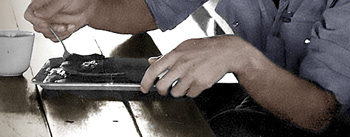
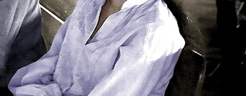


November 18th 1978
 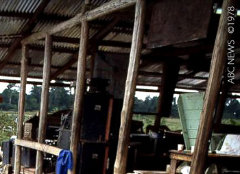
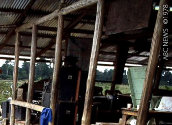
 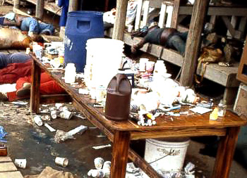
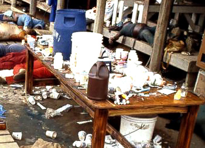

 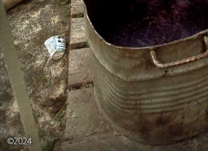
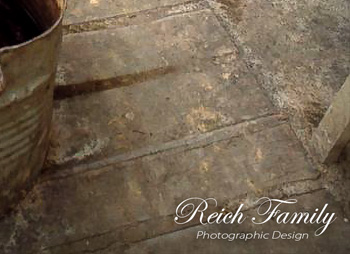
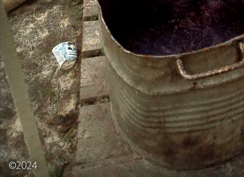
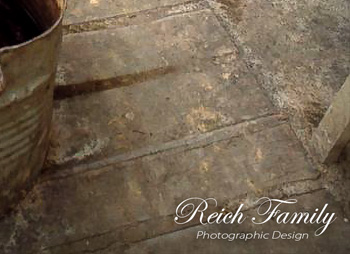
December 1978
 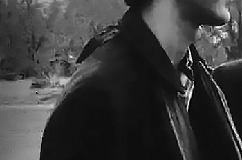
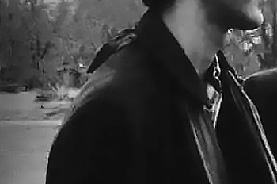


 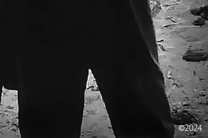
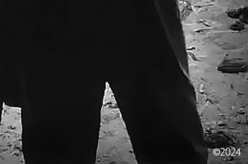
Peoples Temple Resources
Research, Writing and Photographic Design by The Reich Family
Special thanks to the research of Barnett
Sources:
Alternative Considerations of Jonestown & Peoples Temple
Katsaris Family's First Introduction to Peoples Temple in Ukiah California
FBI Tape No. Q1021-A August 1972
Radio Calls for Concerned Relatives April 17 1978
FBI No. Q 736 Press conference on Concerned Relatives
San Francisco Examiner / UPI 1978 / Photographer: Greg Robinson
NBC News 1978 Interview with Anthony and Maria Katsaris
Cameraman: Bob Brown / Interviewer: Don Harris
ABC News 1978 Interview with Tim Carter and Mike Carter in Guyana
Jonestown - The Life - Death of Peoples Temple
Director: Stanley Nelson / Writers: Marcia Smith and Noland Walker
FBI Archive of Jonestown Recordings The Jonestown Death Tape
(FBI No. Q 042) November 18th 1978
United States Air Force Autopsy Report (A006) AFIP# 1680273